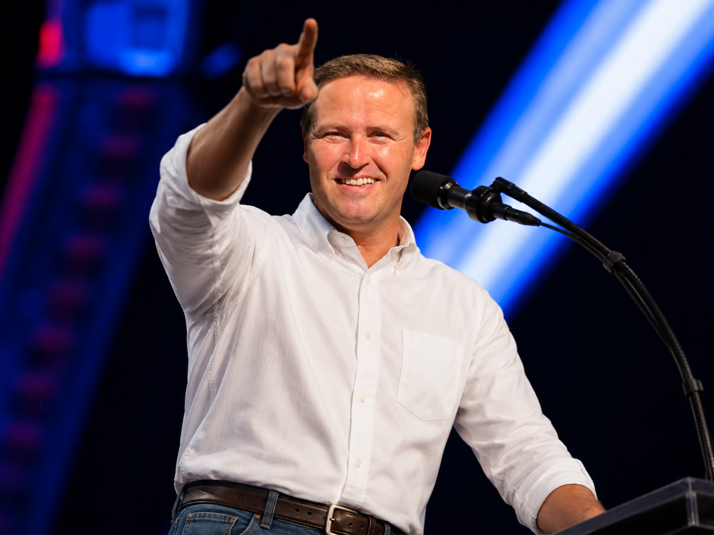

Caráter nas atitudes
Respeito ao próximo, palavra firme, responsabilidade e fé como base para decisões conscientes.
Pré-candidato a Deputado Federal
Valores que unem.Diálogo que constrói.
Quem é Breno Grube
Breno Grube acredita que liderança não se constrói no grito, mas no respeito, no diálogo e na coragem de fazer o que é certo mesmo quando ninguém está olhando.
Advogado, professor universitário e presidente da Associação dos Pioneiros de Brasília Laços de Amizade, Breno representa uma forma mais humana, próxima e equilibrada de pensar o futuro.
Respeito ao próximo, palavra firme, responsabilidade e fé como base para decisões conscientes.
Conflitos não se resolvem com imposição. Para Breno, escutar sempre vem antes de apontar caminhos.
Uma construção mais próxima das famílias e conectada às necessidades reais da população.

Um homem de princípios
Breno acredita que uma sociedade forte começa dentro de casa: com educação, respeito, trabalho digno, fé em Deus e união entre as pessoas.
Sua trajetória é marcada pelo compromisso com a família, pela honestidade e pela defesa do diálogo como ferramenta para construir pontes e encontrar soluções equilibradas.
Card de apoio
Crie uma arte pronta para publicar nos stories ou usar como imagem de perfil nas redes sociais, sem pedir voto e com uma mensagem clara de apoio a essa construcao.
Compromisso com as pessoas
Famílias fortes constroem comunidades fortes. Breno defende respeito, segurança e oportunidades para quem sustenta o país todos os dias.
Uma liderança que une
Breno acredita que diferentes opiniões podem coexistir quando existe respeito. Seu propósito é aproximar pessoas, fortalecer valores e defender o que realmente importa: dignidade humana, família e futuro das próximas gerações.

Como essa construção acontece
Conhecer de perto as histórias, dificuldades e prioridades das pessoas.
Construir pontes entre ideias diferentes sem alimentar conflitos desnecessários.
Transformar valores, escuta e responsabilidade em propostas com sentido para a vida real.
Acompanhar
Deixe seu contato e acompanhe as próximas conversas da pré-campanha.